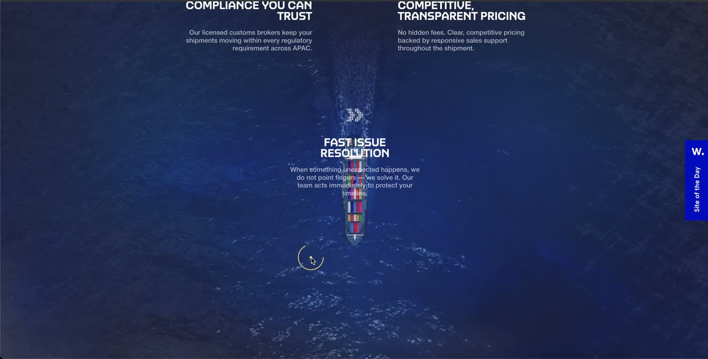
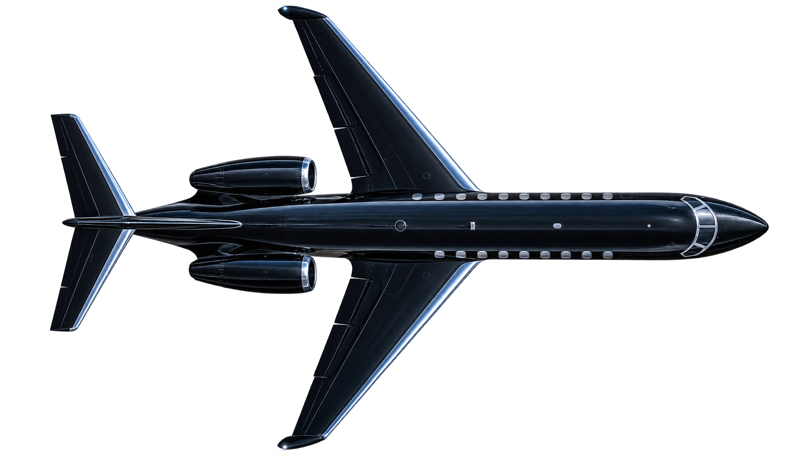
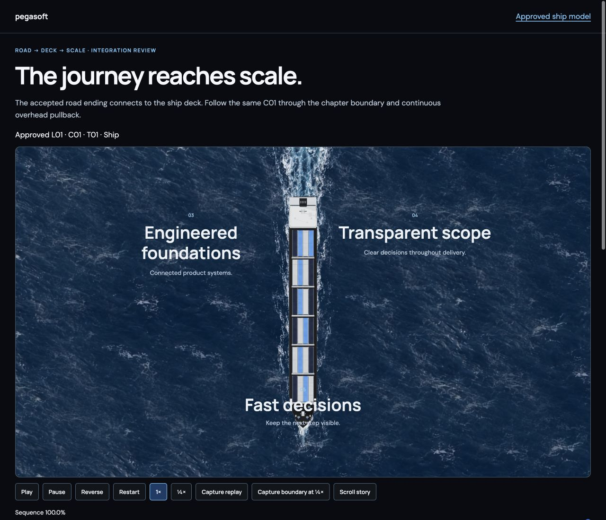

01 · Recede + veil
Continue the ship shot.
Start from the exact approved ship endpoint. Keep the bow downward and the camera orientation steady. Left cloud layers enter while the vessel keeps receding; text continues upward.
Continue the same receding vessel into layered cloud cover, then bring the approved black private jet across from left to right. The trust section follows the aircraft’s crossing.
Reference only. White aircraft, purple atmosphere, testimonials and company marks will not be used as Pegasoft assets. Recording time reflects the reviewer’s scrolling, not a prescribed animation speed.

Start from the exact approved ship endpoint. Keep the bow downward and the camera orientation steady. Left cloud layers enter while the vessel keeps receding; text continues upward.
The lower-right cloud bank grows into the view. The oversized J02 nose enters from the left while the distant ship remains faintly visible through the central gap. No cut or separate camera reset.
Keep the accepted jet translation/scale, silhouette shadow and reveal landmarks coupled. Porcelain follows the wing/fuselage crossing until the cloud/ocean scene is covered and the tail exits right.
Exact new scroll intervals, cloud transforms and occlusion thresholds remain unset until the selected cloud plates are reviewed. Source landmarks constrain their order; the recorded pauses will not be copied into the story.
Three independent transparent PNGs allow the reference’s left/right overlap and depth without stretching one repeated cloud image across the whole scene. The approved vessel, water and aircraft stay separate.
A wide left-edge cloud mass with a softly broken boundary. Establish the first bank above the receding vessel; retain a clear central gap.
A smaller wispy foreground mass. Start the gentle sea/ship veiling before the dense banks enter; avoid a uniform grey opacity sheet.
The larger irregular lower/right cloud mass. Close across the lower view with coherent soft edges and realistic internal density.
Proposed: one 1536 × 1024 transparent PNG per layer, high quality, Image 2.5. Three single-output jobs, no retries or extra variants. Live pricing reports USD 1 per provider “unit”; it does not specify units consumed by these outputs, so this is not a USD 3 quote or spending cap. No jobs have been submitted.
Cool white / silver-blue natural vapor, coherent upper-left illumination. The scene palette applies to atmosphere; clouds are not carbon-painted surfaces. Inspect alpha edges on both carbon and porcelain, internal volume, lighting consistency and compositing density at desktop/mobile sizes.

Use the exact approved cutout and load the approved numerical shadow preset. Preserve the existing measurement, transform and copy editor.
Open the accepted crossing ↗
Reuse S01, unchanged C01 and the uniform photographic water/wake. Continue from its ending camera, scale and content state. Recorded journey approval.
No new vessel geometry, jet views, recolouring or vehicle generation.
This proposal selects the three cloud inputs needed for the authorised ship-to-jet integration. After generation, review the static cloud family on carbon and porcelain before it is applied to the connected journey.
Cloud movement, depth and occlusion will follow one reversible scroll timeline. No cloud video is selected for this step. The next connected review will include play/pause, reverse, scrub and physical Scroll story controls, with continuous boundary and normal-playback evidence.
The trust headline is “Trusted to build what comes next.” No testimonials, client logos or factual claims will be invented.